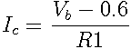

Current sources are useful in a variety of situations and applications. The diagram above shows a simple current source constructed using an NPN transistor.
A voltage is applied to the base of the transistor, in this case provided by a voltage divider. In the example schematic, the voltage is 1.6 volts. The current across the load is determined by ; in the example above this will be 1 milliamp. Note that the current does not depend on the Hfe of the transistor, but only on the base voltage and the emitter resistor.